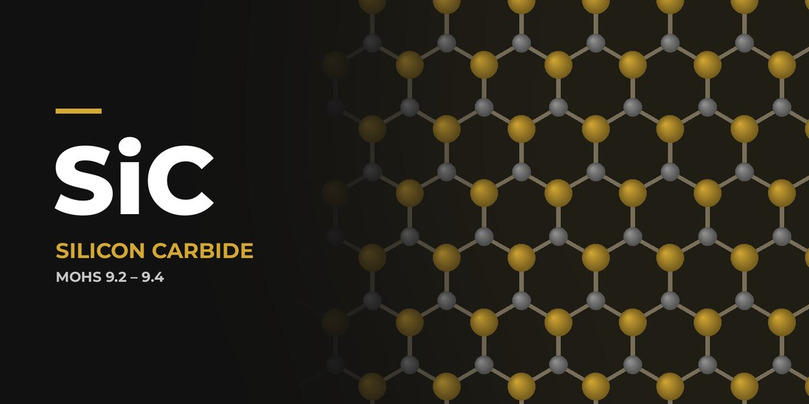

Silicon carbide (SiC): hạt mài siêu cứng – chọn SiC đen hay xanh, cỡ hạt nào cho mài sàn, chống trơn trượt và chịu lửa
SiC là hạt mài nhân tạo rất cứng – trong nhóm vật liệu mài thông dụng chỉ đứng sau kim cương, CBN và boron carbide. Bài này giải thích SiC đen khác SiC xanh thế nào, đọc ký hiệu cỡ hạt F – P – JIS ra sao, và chọn loại nào cho mài terrazzo, sàn chống trơn trượt, phun cát hay vật liệu chịu lửa.

Nhắc đến vật liệu mài, nhiều người nghĩ ngay đến kim cương. Nhưng phần lớn công việc mài, cắt, phun cát và làm vật liệu chịu lửa hằng ngày lại dùng một vật liệu rẻ hơn nhiều: silicon carbide (SiC), trong nghề còn gọi là carborundum hay “kim cương sa”. SiC có độ cứng Mohs khoảng 9,2 – 9,4, cao hơn nhôm oxit nung chảy (Mohs 9), và giá chỉ bằng một phần nhỏ so với kim cương hay boron carbide.
1. SiC được làm ra như thế nào?
SiC trong tự nhiên (khoáng moissanite) rất hiếm, nên gần như toàn bộ SiC công nghiệp là nhân tạo. Nguyên liệu chính là cát thạch anh (SiO₂) và cốc dầu mỏ (C), nạp vào lò điện trở kiểu Acheson và nung đến khoảng 2.000 – 2.500 °C. Phản ứng tổng quát:
Khối SiC thô sau khi nguội được đập, nghiền, làm sạch (tách từ, rửa axit với hàng cao cấp) rồi sàng hoặc phân cấp thành từng cỡ hạt. Tinh thể SiC dạng lục giác, rất cứng và sắc cạnh. Điểm đáng giá là hạt giòn vừa đủ: khi cạnh cắt bị mòn, hạt vỡ ra tạo cạnh sắc mới – gọi là tính tự sắc (self-sharpening).
2. SiC đen và SiC xanh khác nhau thế nào?
Hai loại được nấu cùng một nguyên lý nhưng khác về nguyên liệu và độ tinh khiết. SiC xanh dùng nguyên liệu chọn lọc hơn, thường thêm muối ăn để kéo tạp chất ra khỏi khối nấu.
| Tiêu chí | SiC đen | SiC xanh |
|---|---|---|
| Hàm lượng SiC điển hình | ~98 – 99% (hàng chịu lửa 90%+) | ~98,5 – 99,5% |
| Độ cứng Mohs | ~9,2 | ~9,4 |
| Tính chất hạt | Dai hơn, chịu va đập tốt hơn | Cứng, giòn, sắc hơn |
| Giá | Kinh tế hơn | Cao hơn |
| Hợp với | Đá tự nhiên, bê tông, gang, kim loại màu, cao su; phun cát; chịu lửa, luyện kim | Hợp kim cứng, gốm kỹ thuật, kính, thạch anh, đá quý; đánh bóng chính xác |
Quy tắc dễ nhớ: gia công thô và vừa, vật liệu xây dựng, chịu lửa → SiC đen; gia công tinh, vật liệu rất cứng và giòn, yêu cầu bề mặt cao → SiC xanh.
3. Đọc ký hiệu cỡ hạt: mm, F, P, JIS
Cùng là SiC nhưng cách gọi cỡ hạt khác nhau theo mục đích sử dụng:
- Cát phân đoạn (tính bằng mm): 0–1, 1–3, 3–5, 5–8 mm… dùng cho vật liệu chịu lửa, luyện kim, cốt liệu chống mài mòn. Người mua thường phối nhiều đoạn để đạt độ đặc chắc mong muốn.
- Hạt thô chuẩn F (FEPA) – F12 đến F220: phân loại bằng sàng; số càng lớn hạt càng nhỏ. Dùng cho đá mài, đĩa mài, phun cát, hạt chống trơn trượt.
- Bột mịn chuẩn F – F230 đến F1200 (có thể đến F2000): phân cấp bằng lắng hoặc khí động học, đặc trưng bằng cỡ hạt trung bình D50. Dùng cho mài nghiền, đánh bóng, gốm kỹ thuật.
- Chuẩn P (FEPA/ISO 6344): dành riêng cho giấy nhám, dải cỡ hạt khác chuẩn F dù số hiệu giống nhau.
- JIS (Nhật Bản): hay gặp ở bột mịn, ví dụ #240 – #3000. Số JIS và số F gần tương ứng nhưng không trùng nhau.
Bảng quy đổi gần đúng cỡ hạt danh nghĩa của một số cỡ F thông dụng:
| Cỡ F | Cỡ hạt danh nghĩa | Cỡ F | D50 bột mịn (µm) |
|---|---|---|---|
| F16 | ~1,2 mm | F240 | 44,5 ± 2,0 |
| F24 | ~0,71 mm | F320 | 29,2 ± 1,5 |
| F36 | ~0,50 mm | F400 | 17,3 ± 1,0 |
| F60 | ~0,25 mm | F600 | 9,3 ± 1,0 |
| F80 | ~0,18 mm | F800 | 6,5 ± 1,0 |
| F120 | ~0,125 mm | F1000 | 4,5 ± 0,8 |
| F220 | ~0,075 mm | F1200 | 3,0 ± 0,5 |
4. Chọn SiC cho các ứng dụng trong xây dựng
Mài sàn terrazzo, đá granite, bê tông mài
SiC là hạt mài truyền thống trong đá mài liên kết magnesite, resin hay xi măng dùng cho máy mài sàn và mài đá. Nguyên tắc là mài theo từng bước từ thô đến tinh:
- Mài thô, phá mặt, san phẳng: SiC đen khoảng F16 – F46.
- Mài trung gian, xóa vết mài thô: khoảng F60 – F220.
- Mài tinh và đánh bóng: từ F320 trở lên, có thể chuyển sang SiC xanh ở các bước cuối.
Không nên nhảy cóc quá xa giữa hai cấp: vết xước sâu của cấp trước sẽ tốn nhiều thời gian hơn để xóa ở cấp sau.
Sàn chống trơn trượt
Hạt SiC được rắc lên lớp phủ epoxy/PU còn ướt, hoặc trộn vào lớp hoàn thiện, để tạo độ nhám bền lâu cho sàn nhà xưởng, ram dốc, cầu thang, sàn khu ướt. Vì cứng hơn cát thạch anh nhiều, hạt SiC giữ được độ nhám lâu dưới lưu lượng đi lại và xe đẩy. Cỡ hạt thường nằm trong khoảng F16 – F60: hạt càng to, độ nhám càng cao nhưng càng khó vệ sinh.
Phun cát và xử lý bề mặt
SiC đen cỡ trung bình (khoảng F36 – F120) cắt nhanh, dùng để làm sạch, tẩy gỉ, tạo nhám bề mặt kim loại và đá, khắc mờ kính trang trí. Hạt cứng nên có thể thu hồi và tái sử dụng nhiều vòng trong buồng phun kín.
Vật liệu chịu lửa và luyện kim
Nhờ dẫn nhiệt cao, giãn nở nhiệt thấp và chịu sốc nhiệt tốt, SiC (thường 90 – 98%, dạng cát 0–5 mm và bột mịn) là cốt liệu cho gạch chịu lửa, bê tông chịu lửa, tấm kê lò nung gốm sứ, gạch. Trong luyện thép và đúc gang, SiC còn được dùng làm phụ gia khử oxy và bổ sung silic, cacbon.
5. Kiểm tra gì khi nhận hàng?
Con số “98,5% SiC” trên nhãn chưa đủ nói lên chất lượng. Một phiếu kiểm tra (COA) đáng tin nên có:
- Hàm lượng SiC tối thiểu theo mác.
- Cacbon tự do (F.C) và Fe₂O₃: cacbon tự do cao làm hạt “mềm”, sắt cao ảnh hưởng tới liên kết đá mài và vật liệu chịu lửa.
- Phân bố cỡ hạt: với bột mịn cần cả D3, D50, D94 chứ không chỉ D50 – hạt quá cỡ là nguyên nhân hàng đầu gây xước khi đánh bóng.
- Tỷ trọng đổ đống, độ ẩm, tạp chất từ tính khi ứng dụng yêu cầu.
Với đơn hàng đầu tiên, nên chạy thử mẫu trên thiết bị và vật liệu thật của mình trước khi đặt số lượng lớn.
6. An toàn khi sử dụng
SiC trơ hóa học nhưng bụi mịn vẫn gây hại đường hô hấp. Khi rót, trộn, phun hay mài khô cần đeo khẩu trang chống bụi đạt chuẩn, kính bảo hộ, và ưu tiên mài ướt hoặc có hút bụi. Bảo quản bao kín, khô ráo để tránh hút ẩm và lẫn tạp chất.
Kết luận
SiC là lựa chọn cân bằng giữa độ cứng và chi phí cho rất nhiều công việc trong ngành vật liệu xây dựng. Chọn đúng loại (đen hay xanh), đúng chuẩn và cỡ hạt, và yêu cầu COA đầy đủ là ba bước giúp tránh lãng phí. Core Material cung cấp SiC đen và SiC xanh từ cát phân đoạn đến bột mịn F1200 – xem thông số tại trang sản phẩm hạt mài SiC hoặc liên hệ để nhận mẫu thử.
Nguồn tham khảo
- FEPA 42-1 / 42-2 – Grains of fused aluminium oxide, silicon carbide and other abrasive materials for bonded abrasives (macrogrits F4–F220; microgrits F230–F2000)
- ISO 8486-1/-2 – Bonded abrasives: Determination and designation of grain size distribution
- ISO 6344 – Coated abrasives: Grain size analysis (P grades)
- JIS R 6001 – Bonded abrasive grain sizes
- Tài liệu kỹ thuật (TDS) silicon carbide của nhà sản xuất, 2026